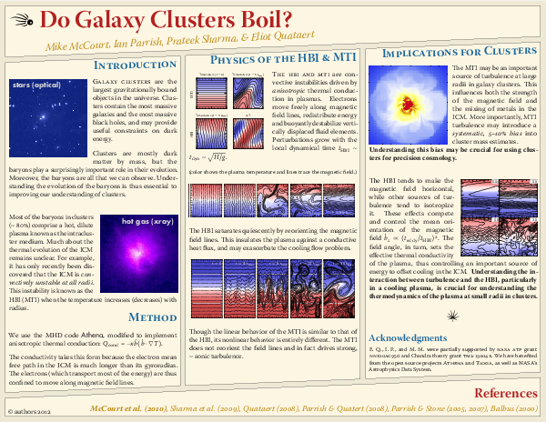
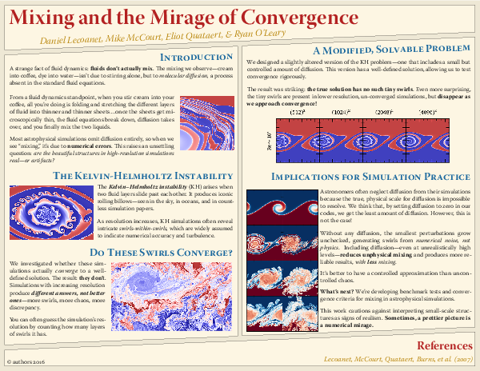

<h2>Cluster Outskirts and Cosmology</h2>

<a href="./outer-parts.pdf">
  
</a>

<h2>Thermal Instability and Galaxy Formation</h2>

<a href="./thermal-instability.pdf">
  
</a>

<h2>Saturation of Buoyancy Instabilities</h2>

<a href="./buoyancy-saturation.pdf">
  
</a>

<h2>Gas Clouds in the Galactic Center</h2>

<a href="./gas-clouds.pdf">
  
</a>

<h2>Plutos &amp; the Inclination Instability</h2>

<a href="./inclination-instability.pdf">
  
</a>

<h2>The Illusion of Mixing</h2>

<a href="./mixing.pdf">
  
</a>
